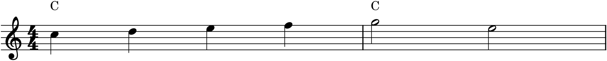
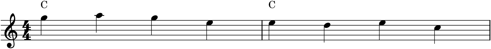
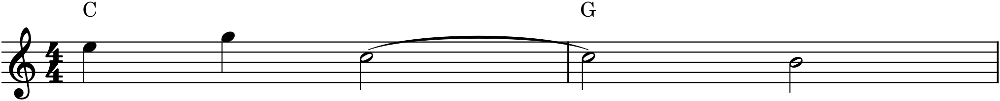

If music were made only of chord tones — every note belonging to the chord sounding beneath it — it would be correct and utterly stiff. What gives a melody life is the notes that don’t belong: the ones that pass between chord tones, lean against them, and delay their arrival, creating little frictions that immediately resolve. These are non-chord tones (NCTs), and they are the difference between a block-chord progression and actual music. This last chapter of Part 2 catalogues the important ones — and in doing so, quietly turns harmony back into melody, which is where Part 3 begins.
16.1What a non-chord tone is
A non-chord tone is a note that is not a member of the chord sounding at that moment. Because it does not belong, it is usually a mild dissonance — and that is the point: it creates a moment of tension that the next note, a chord tone, resolves. What defines each type of NCT is not the note itself but how it is approached and how it is left — by step or by leap, from above or below. Master those approach-and-departure patterns and you can name any NCT on sight, and, more importantly, use it on purpose.
Throughout, the figures show a single melodic line with a chord symbol above it. The chord tells you the harmony; any melody note that is not in that chord is a non-chord tone.
16.2The passing tone
The passing tone (PT) fills the gap between two chord tones a third apart, moving stepwise in one continuous direction. It is approached by step and left by step, in the same direction — it passes through, on the way from one chord tone to another.

The rising line in Figure 16.1 shows the essential case: a scale moving through a chord picks up a passing tone on every step that isn’t itself a chord tone. Passing tones can move up or down, and there can be more than one in a row; what makes them passing tones is simply that the line keeps going the same way, stepping through them.
16.3The neighbor tone
The neighbor tone (NT) steps away from a chord tone and immediately steps back to the same note. It is approached by step and left by step in the opposite direction — it departs and returns, decorating a single chord tone. A neighbor above is an upper neighbor; one below, a lower neighbor.

Where a passing tone travels between two chord tones, the neighbor tone in Figure 16.2 circles around one. Both are stepwise and both are gentle; the difference is only in direction — the passing tone continues, the neighbor returns.
16.4The suspension
The suspension is the most expressive non-chord tone, because it creates dissonance by holding on. A note that is a chord tone in one chord is sustained into the next chord — where it no longer fits, and clashes — and then resolves down by step to a note that does fit. It has three parts, always in this order:
- Preparation — the note sounds as a consonant chord tone.
- Suspension — the chord changes underneath, but the note is held, now a dissonance.
- Resolution — the held note falls by step to a chord tone of the new chord.

The suspension in Figure 16.3 is named “4–3” for the intervals above the bass: the held C is a fourth above G, resolving to B, a third above. (Other common ones are the 7–6 and the 9–8.) The tie is essential — it is the holding that creates the tension — which is why the suspension sounds like a gentle ache resolving, and why composers reach for it at moments of expressive weight. It is the single most beautiful thing four-part writing can do.
16.5A few more
Four more NCTs round out the vocabulary; you will recognize them once named:
- Appoggiatura — like a suspension but leapt to rather than prepared: the dissonance arrives by leap, usually on a strong beat, then resolves down by step. It “leans” (the word means exactly that) and is sharply expressive.
- Escape tone — approached by step, then left by a leap in the opposite direction; a little melodic feint.
- Anticipation — the reverse of a suspension: instead of holding a note late, you arrive at the next chord’s tone early, before the chord beneath it changes.
- Pedal point — a single note, usually in the bass, held or repeated while the harmony changes above it, so that it is consonant with some chords and dissonant with others as they pass over it.
Each is, again, defined by its approach and departure — leap or step, which direction — and each adds a distinct flavour of tension to a line.
16.6The breath of music
Non-chord tones are where harmony and melody meet. The chords give you a skeleton; the non-chord tones are the flesh that moves on it — the passing tones that let a melody run, the neighbors that let it turn, the suspensions that let it ache. A progression without them is a series of vertical blocks; a progression with them breathes, because every non-chord tone is a small inhale of tension and the resolution is the exhale. This is the hinge into Part 3, which is entirely about melody: how a line acquires shape, motive, and phrase. You already have the tools — you have just seen, in the suspension and the passing tone, that a melody is largely chord tones connected and decorated by notes that don’t belong. Part 3 makes that into an art.
In MuseScore
Non-chord tones are entered as ordinary notes; what makes them non-chord tones is the harmony around them, so the way to study them in MuseScore is to put the harmony there and listen for the friction.
- Enter a melody on a staff, and add chord symbols above it with Ctrl+K (Chapter 13), or a simple accompaniment of blocked chords below. Now every melody note either belongs to its chord or doesn’t — and the ones that don’t are your non-chord tones.
- For a suspension, you need the held note: enter it, then tie it into the next chord with T (Chapter 6) so it sustains across the harmony change before resolving down by step. The tie is what makes it a suspension rather than a mere re-struck dissonance.
- Turn on chord-symbol or accompaniment playback and press Space. Listen for the small tension on each non-chord tone and the little relief as it resolves — that sound is the non-chord tone.
Try it: enter a held whole-note C-major chord and, above it, the scale C–D–E–F–G in quarter notes; play it and hear the passing tones D and F rub against the chord and resolve. Then build the suspension from Figure 16.3: a C tied from a C-major chord into a G chord, falling to B. Play it, remove the tie, and play it again — the tie is the whole difference between an expressive suspension and an ordinary note.